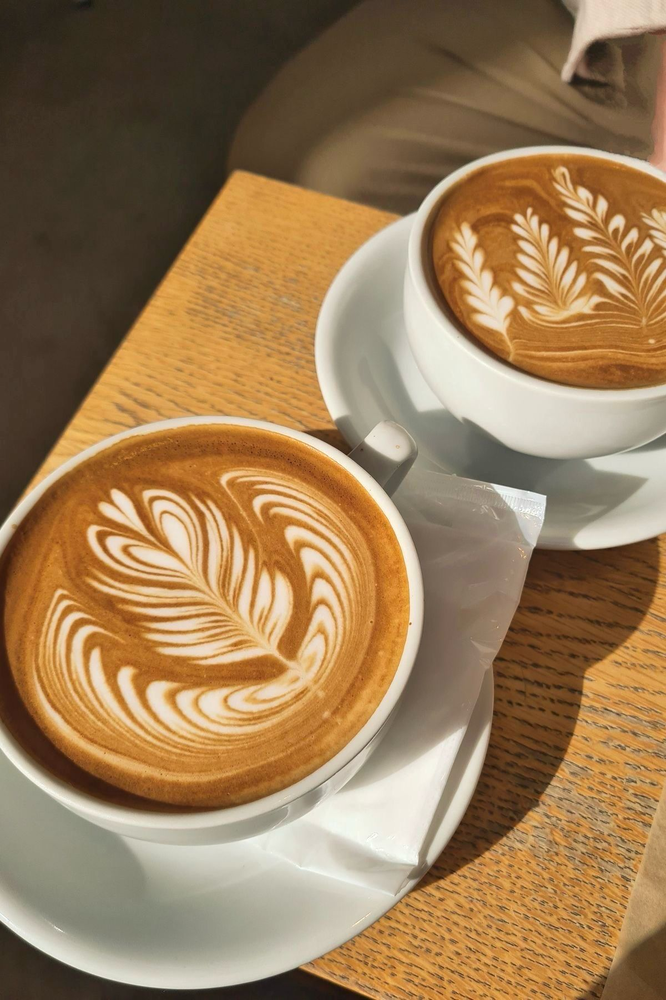

Istoria Cafelei
Cafeaua are o istorie bogată care datează de secole. Se crede că a originat în Etiopia...
Citește mai multDescoperiți lumea cafelei, de la origini până la tehnicile perfecte de preparare.
Suntem pasionați de cafea și dedicați să împărtășim cunoștințele noastre cu alți entuziaști ai cafelei. Echipa noastră este formată din experți în cafea, barista profesioniști și iubitori de cafea care își doresc să aducă cele mai bune informații și sfaturi despre cafea.
De-a lungul anilor, am explorat diverse metode de preparare a cafelei, am învățat despre originile și istoria acestei băuturi fascinante și am descoperit cele mai bune practici pentru a obține o ceașcă de cafea perfectă. Ne dorim să împărtășim aceste cunoștințe cu voi, pentru ca fiecare dintre voi să poată savura o cafea de calitate, indiferent dacă sunteți acasă sau la birou.
Pe blogul nostru veți găsi articole despre istoria cafelei, ghiduri de preparare, recenzii ale diferitelor tipuri de cafea și echipamente, precum și curiozități și beneficii ale consumului de cafea. Ne străduim să oferim conținut de calitate, actualizat și relevant pentru toți iubitorii de cafea.
Vă invităm să ne urmăriți și să ne împărtășiți experiențele voastre cu cafeaua. Împreună, putem crea o comunitate de pasionați de cafea care să se bucure de fiecare ceașcă savurată.
Cafeaua are o istorie bogată care datează de secole. Se crede că a originat în Etiopia...
Citește mai multPrepararea cănii perfecte de cafea este o artă. Iată câteva sfaturi pentru a începe...
Citește mai multCafeaua este a doua cea mai tranzacționată marfă din lume, după petrol.
Există peste 100 de specii de plante de cafea, dar doar două sunt cultivate la scară largă: Arabica și Robusta.
Prima cafenea din lume a fost deschisă în Constantinopol (actualul Istanbul) în anul 1475.
Brazilia este cel mai mare producător de cafea din lume, urmată de Vietnam și Columbia.
Există multe tipuri de cafea, fiecare cu propriile sale caracteristici unice. Printre cele mai populare se numără:
Espresso: O cafea concentrată, preparată prin forțarea apei fierbinți prin cafea măcinată fin.
Latte: O combinație de espresso și lapte fierbinte, cu un strat subțire de spumă de lapte deasupra.
Cappuccino: Similar cu latte, dar cu o cantitate mai mare de spumă de lapte și uneori presărat cu cacao sau scorțișoară.
Americano: Espresso diluat cu apă fierbinte, oferind o cafea mai puțin concentrată.
Mocha: O combinație de espresso, ciocolată caldă și lapte, adesea acoperită cu frișcă.
Pentru mai multe informații, ne puteți contacta la:
Email: info@totuldesprecafea.ro
Telefon: +40 123 456 789